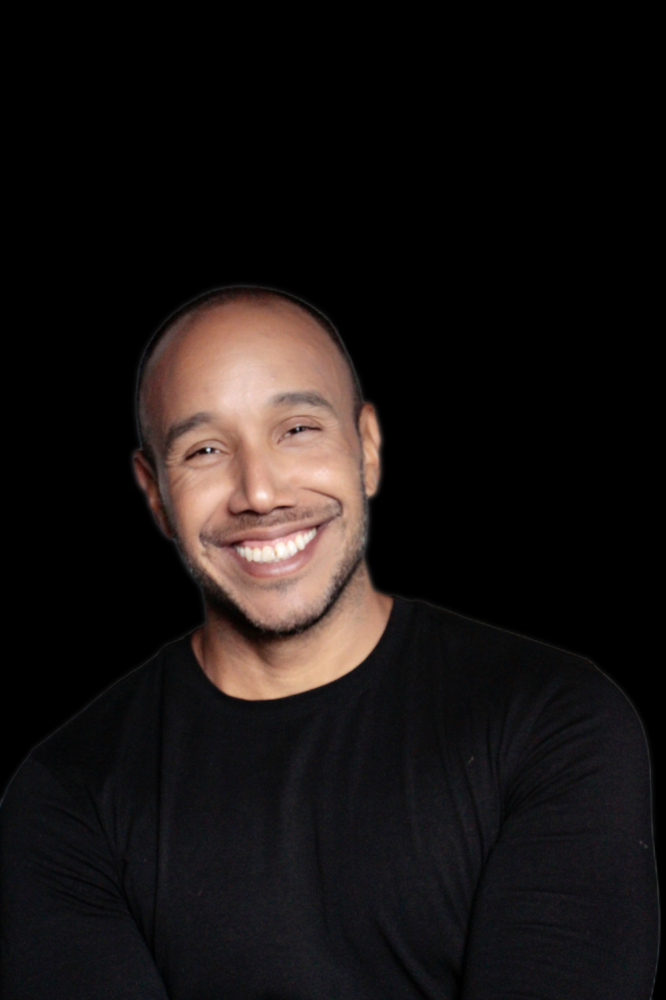

Te ayudo a construir una marca personal auténtica
que se vea, se sienta y se recuerde.
Soy Gerardo Mudarra, especialista en marca personal, comunicación e imagen auténtica. Trabajo con profesionales, artistas, emprendedores y marcas que desean destacar sin disfrazarse, impactar desde su esencia y dejar huella real en quien los ve, los escucha o los sigue.
Creo que tu historia tiene poder. Y yo te enseño a contarla, vestirla y proyectarla con intención.

Ayudo a las personas a destacar siendo ellas mismas. Me especializo en desarrollo de marca personal con enfoque en comunicación e imagen. Alineo quién eres con lo que proyectas para que tu mensaje sea auténtico, poderoso y memorable.
No importa si eres artista, emprendedor o profesional: todos tenemos una historia que merece ser contada, y yo te enseño a contarla y sostenerla con presencia y coherencia.
Ayudo a las marcas a conectar genuinamente con su audiencia. Alineo la esencia del negocio con su comunicación. Diseño estrategias de imagen, contenido y comunicación emocional que generan impacto y construyen lealtad.
Cada negocio tiene una historia única. Y yo te ayudo a contarla con intención, autenticidad y fuerza.
“Tu historia no necesita filtros. Necesita ser contada con verdad.”
Soy comunicador, actor, creativo y formador. Pero antes de enseñar a otros a hablar, vestir y brillar con autenticidad, fui una historia que tuvo que aprenderlo todo desde dentro.
Fui un niño con tartamudez. Me costaba expresar mi voz y aceptarme frente al espejo. Hoy, esa misma voz guía a otras personas a reconectar con su esencia, expresarse sin miedo y mostrarse con poder, desde lo que verdaderamente son.
He dedicado los últimos 20 años a formar y acompañar a profesionales, artistas, emprendedores y marcas que buscan impactar con verdad. Lo hago desde la experiencia, la sensibilidad y el compromiso profundo de quien sabe lo que cuesta brillar cuando no te crees suficiente.
No creo en fórmulas vacías, ni en disfraces que no representen tu esencia. Creo en lo real, lo emocional y lo estratégico. Creo en el poder de comunicar desde lo que eres.
¿Qué tienen en común mis clientes? Que entendieron que no basta con tener presencia. Hay que tener propósito.
Charlas, masterclass y talleres que despiertan tu autenticidad, tu voz y tu imagen. Espacios diseñados para ayudarte a comunicar con intención, proyectarte con seguridad y dejar huella desde lo que eres.
Arriésgate a Confiar en Ti
Una charla gratuita para quienes comienzan su camino de transformación personal. Inspiración + ejercicios + acceso a programas.

Habla con Poder, Conquista con Historias
Masterclass online de storytelling estratégico para comunicar con emoción y propósito. Ideal para líderes, artistas, emprendedores.

Tu Imagen Habla
Una masterclass para entender el poder silencioso de tu imagen personal. Aprende a vestirte desde tu autenticidad.
Fashion Camp – Marca Personal
Programa intensivo de 15 días para construir una marca auténtica y emocional. Clases + retos + seguimiento personalizado.
Proyección Escénica
Taller para modelos y artistas que desean dominar la escena con autenticidad. Técnicas de expresión, postura, presencia.

Aprende a Ser Fotogénico(a)
Reconéctate con la cámara y transmite desde lo genuino. Técnicas de expresión facial, mirada, cuerpo y prácticas guiadas.

Comienza tu proceso hoy. Pide más información o agenda tu primera sesión.
Comienza tu proceso